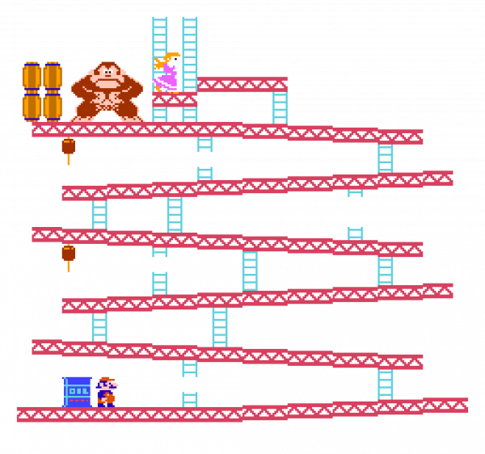

Platform Engineering

About Me
John Burns
Staff Platform Engineer @ GrubHub
CKUG Co-Organizer
ktlint-gradle Maintainer
 wakingrufus
wakingrufus
 @wakingrufus@bigshoulders.city
@wakingrufus@bigshoulders.city
- Unlimited PTO
- 8-16 weeks of parental leave
- 4.5 day work week
- Based in Chicago
History
Dev | Ops
History
DevOps
Problems with DevOps
- Too much variety
- Duplication of effort
- Lack of commodities
How It Started
- "DevOps" team
- Scope was too small
More Scope
- Ecosystem-specific build tooling
- Platform Services
- Runtime libraries
Guiding Principles
- Golden path (not a golden cage)
- Carrot vs Stick
How It's Going
Infrastructure Platform
- CI tooling (jenkins)
- CD tooling (k8s, spinnaker)
- Infrastructure-as-Code (terraform, pulumi)
- Networking (elbs, edge/CDN services)
- Service Mesh (envoy, istio)
Service Platform
- Build tooling (bazel, maven/gradle plugins)
- Platform Services
- Runtime libraries
- Service Mesh
Developer Experience
- IDP: "Platform" vs "Portal"
- Deployment state
- Adoption
- Security
How does this help DX?
- Don't break the build
- 2-way continuous communication cycle
What's next?
Building a Great Developer Experience - Me (Coming in 2024)
Psychological Affordances Can Provide a Missing Explanatory Layer for Why Interventions to Improve Developer Experience Take Hold or Fail - Cat Hicks
 wakingrufus
wakingrufus
 @wakingrufus@bigshoulders.city
@wakingrufus@bigshoulders.city